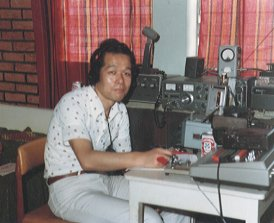

|
【東マレーシアから6mを初運用】
1980年11月、東マレーシアから初の6mの運用が行なわれました。
東マレーシアでは6mに近い周波数の48MHz帯がテレビに使われておりQRVが不可能と言われていた国。
今回のマレーシアからのQRVは、先にブルネイ(VS5=現V8)から運用した実績を持つVS5TX(Alan)により、
9M6BEのコールサインで11月29日から運用が開始されました。
運用を開始した11月29日には早くもJAがオープン、JH8RVRとのQSOが9M6-JAの初QSOとなりました。
2日後の12月1日から応援に駆けつけたJA1BK、JA1RJUがそれぞれ9M6MA、9M6MOのコールサインで運用、
12月4日にQRTするまでに延べ1453局と6mでQSOしました。
マレーシアは、マレー半島の西マレーシアと東シナ海を隔てたボルネオ島の北西部分の東マレーシアの2つに分かれています。
今回の運用はボルネオ島側の東マレーシア・サバ州の首都コタ・キナバルからの運用でした。
東マレーシアからの6m運用許可は、電波伝搬テストとして短期間だけ特例として認められたもので、
サイクルのピークであるこの時期に限られ、テレビ等にインターフェアを与えてはならない事を絶対条件として、
東マレーシアの事情に精通する、地元サバ州のテレコム(JTM)の判断で許可されたもの。
6mの運用成功の陰には、多大な理解を示してくれたテレコムの協力はもちろん、運用許可の働きかけから運用場所の提供など、
全面的にバックアップしてくれた9M6BE(Bala)ほか、9M6MA(Hassan）、9M6MO(Mohammed)、
Vincent氏ら、地元の各局とマレーシアとの橋渡しをしてくれたVS5TXの献身的な協力がありました。
6mで多くのJAに貴重な1カントリーをプレゼントしてくれた、これら関係者に心から感謝します。
【JA1RJU・小笠原 一夫】

6mで9M6MA & 9M6MOを運用するJA1RJU
|